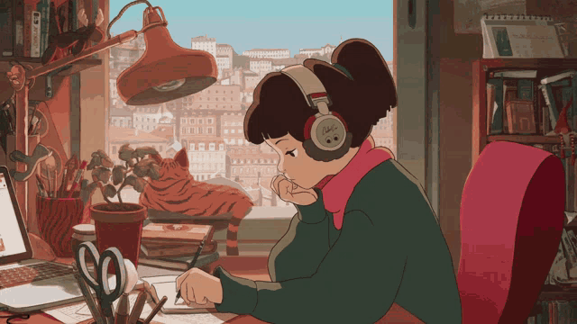

Entenda como uma mistura de hip-hop, jazz e música eletrônica se tornou trilha sonora do isolamento – e fez do YouTube uma sessão de terapia coletiva para encarar o home office. Melodias relaxantes, arranjos discretos, ritmo lento e ausência de letra. Esse estilo musical, que tem raízes no começo dos anos 2000, deslanchou nos últimos anos em rádios online e playlists de plataformas de streaming
Os ouvintes de lo-fi têm algo em comum: usam a música – um amálgama de jazz, música eletrônica e hip-hop – como pano de fundo relaxante para ler, estudar, trabalhar, dormir, meditar.
